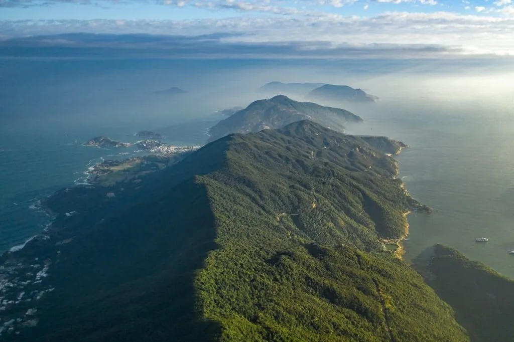
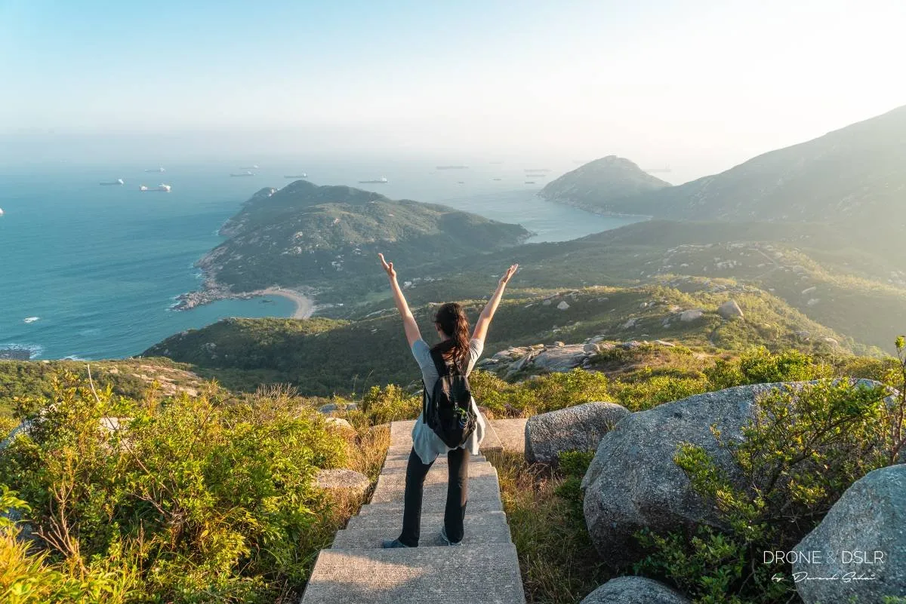
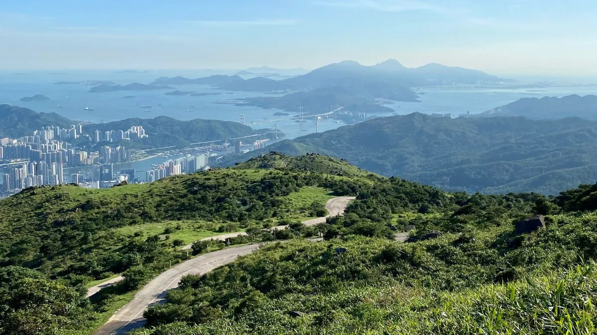

The Victoria Peak Trail is one of the most accessible ways to experience Hong Kong's dramatic skyline from above. The route is relatively gentle and well-paved, making it suitable for a wide range of visitors.
Details
Difficulty
Easy
Duration
1–2 hours
Starting Point
The Peak Tower
Dragon's Back Trail

Dragon's Back is one of Hong Kong's most famous hikes, known for its sweeping ridge views and coastal scenery. It offers a slightly more challenging experience while still being manageable for most visitors.
Details
Difficulty
Moderate
Duration
2–3 hours
Starting Point
To Tei Wan bus stop
Lamma Island Walk

The Lamma Island walk provides a relaxed coastal route connecting small villages, beaches, and seafood restaurants. It's ideal for those who want a slower-paced outdoor experience.
Details
Difficulty
Easy
Duration
1.5–2 hours
Starting Point
Yung Shue Wan Ferry Pier
Tai Mo Shan

Tai Mo Shan is Hong Kong's highest peak and offers a more demanding climb with rewarding panoramic views. It is best suited for visitors looking for a more physically engaging hike.